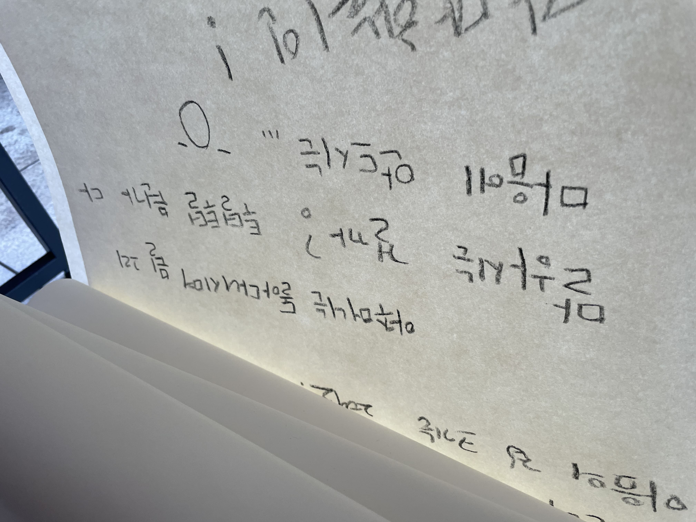

경비원, 나팔수,
<그럼, 시작하겠습니다.
제가 본 전시의 존재감을 처음 느낀 순간은 정우찬 작가의 인스타그램에 래퍼 권기백이 전시를 홍보하는 스토리를 보던 때였습니다. 작가의 동료이자 친구로서 그가 흑인 음악에 관심을 두고 있다는 사실은 알고 있었지만, 사운드트랙에 권기백이 나올 줄은 꿈에도 몰랐거든요. (제가 알고 있는 권기백은 초중학생의 나이로, 출중한 커리어와 많은 논란을 갖춘 래퍼 비프리의 앨범에 참여하며 갖가지 욕설과 음담패설을 공격적인 사운드로 노래하는 래퍼였습니다. 현대미술과는 별다른 접접이 없던.)
또 하나 특징적으로 봤던 것은 전시 예고글에 있던 '지금 이곳은 대화를 갈망하는 바람들로 가득하다'는 문장이었습니다. 예전에 작가가 어느 비엔날레에서 (토마스 허쉬혼의 아카이브 연작과 같이) 전시 공간을 교육 현장으로 만들어 운영하는 작업을 작가가 인상 깊게 봤다는 내용을 전해 들은 바 있거든요. 이번 예고 글을 읽고 '아 이 친구가 자기 태도를 이쪽으로 완전 세운 건가?'하는 기대감이 들더라고요. 작가가 레고랜드에서 일하고 있다는 소식도 근황을 나눌 때 종종 들었지만 그것을 다룬 영상 작업이 나왔다는 소식에, 시간의 흐름을 느끼며 전시장으로 향했습니다.
전시장의 입구에 떡하니 '나는 당신과 함께 이곳에서 이야기하길 요청한다'라고 적힌 롤링 페이퍼가 있더군요. 상당히 부담스러운 문구라 헛웃음을 지으며 전시 다 보고 와야겠다고 생각했습니다. 그 뒤로는 'LLKR'이라는 제목으로 16×12cm라는 작은 크기의 사진 연작이 걸려 있었죠. 사진적 쾌를 느끼기에는 꽤 작은 사이즈여서 단편적인 이미지로 눈에 담은 후 스쳐 지나갔던 듯해요.
정우찬 개인전, 《경비원, 나팔수, 도깨비》, 전시 전경, 아트센터 예술의 시간 4층, 2025
본 공간으로 들어가니 전시 제목과 동명의 작품인 영상 <경비원, 나팔수, 도깨비>을 관람하기에 적합한 환경이 조성되어 있더군요. 예술의 시간 전시장은 이번이 두 번째 방문인데, 완벽한 화이트 큐브는 아니었던 걸로 기억하거든요. 곳곳에 벽돌로 이루어진 벽이나 마감되지 않은 거친 벽면이 있고 그 사이사이 하얀색으로 마감된 벽면이 섞인 공간이었는데요. 조명을 모두 끄고 스팟 조명으로 사진 작품만 쬐니 영상이 가장 큰 존재감을 띠더라고요. 그래서 순순히 영상으로 향했습니다.
작가가 레고랜드에서 일하는 시간제 근로자의 열악한 근무 환경과, 레고랜드 부지를 되찾기 위해 투쟁하는 시위대를 취재한 내용을 교차 편집해 만든 다큐멘터리 영상이었죠.
ⓒ 정우찬
저는 레고랜드라는 곳이 존재한다는 사실도 작가와 근황을 나누다 처음 알게 되었는데요. 작가 시점의 바디캠/핸드헬드 촬영본과 인터뷰 형식의 취재 촬영본을 보다 보니 금세 그 내부 사정을 알게 된 사람이 되어버리더군요. 영화나 다큐멘터리를 볼 때마다 겪게 되는 신비로움이었습니다.
영상에서 작가와 함께 대화를 나누는 아르바이트생은 20대로 보이고 시위대분들은 50대 정도로 보였습니다. 전자의 이야기는 제게 익숙하게 느껴졌는데 후자의 것은 낯설어서 태극기 부대 볼 때의 거리감을 두고 봤었어요. 무언가를 계속해서 외치지만 그 내용이나 방식이 나에게 확 와닿지도 설득력 있지도 않은, 길 가다 마주치면 눈 안 마주치고 지나갈 법한 그런 사람들처럼요. 작품 제목에 따르면 이 사람들은 "그릇된 이념을 가진 무분별한 숭배의 집단이자, 제멋대로인 사람인" Joseph요제프 괴벨스/나팔수로 분류되죠.

레고랜드나 시위대 모두 "자기의 모습을 어떻게 보여주고 싶은지"에 관한 전략이 명확한 주체들이잖아요. 근데 작가의 영상에는 그 모습들이 최소한으로 담기고 그 이면의 이야기들이 더 많이 담겨 있었죠. 그래서인지 마음을 열게 하는 장면들을 곳곳에서 만날 수 있었어요.
이를테면 "우오어아으이 · !"라는 이상한 기합을 외며 체조하거나, 시위대가 머무는 텐트인 비닐하우스 안에 단군의 초상화가 있었을 때 시위대 사람들의 순수함을 느낄 수 있었달까요? 자신의 이해를 위해 레고랜드를 뜯어먹으려는 사람이 아니라 레고랜드 부지에 묻힌 유적들을 정말 가치 있게 여기는 사람이라는 점이 느껴졌어요. 이 이후부터 아니꼬운 시선을 거두고 그들의 이야기에 귀 기울이기 시작했습니다.
영상에서 시위대는 ("작가님을 위해 특별히...") 레고랜드 주위를 돌며 레고랜드 측의 만행을 공유합니다. 그리고 그 만행에 대응하기 위해 해왔던 대처법들을 알려주죠.
쭉 봤을 때 설득이 되는 이유도 설득되지 않는 이유도 있었어요. 레고랜드 부지에 있던 유적인 지석묘(고인돌)을 사업자들이 그 땅으로부터 옮겨놓고서 잡석 취급시켰다든지, 하중도와 상중도의 모래를 비교하며 레고랜드가 차지한 땅이 얼마나 귀한 땅인지 역설하는 모습을 보고서는 진짜 레고랜드가 잘못했구나 싶었습니다.
하지만 레고랜드 안에 있는 전망대를 보고 저 레고 타워는 "우리 땅의 기운을 빼앗아 가려고 지은 쇠말뚝입니다. 저기다 태극기를 걸어놓은 것이 아니라 레고 깃발을 걸어놨잖아요. 점령했다는 뜻인가?"라고 말하는 모습을 보면 피식하게 되더라고요. 레고랜드에서 토요일마다 터뜨리는 폭죽 행사 때문에 마을 사람들의 고양이와 개가 유산하고 닭이 알을 못 낳는다는 말을 들을 때는 "분명 슬픈 일이 맞기는 한데..." 싶고요.
근데 그거랑 또 별개로 저 시위대 어르신 너무 잘 섭외했다는 생각이 들더라고요. 마치 이 영상 작업에 출연하기 위해 기다린 사람처럼 말하는 모습이 하나의 캐릭터 같았어요. 선조의 유산을 중요시하는 호국정신이 근간에 있지만 어떤 대상을 너무 미워하다 보니 그들의 하나하나가 모두 아니꼽게 보이는, 증오가 느껴지기도 했고요.
그러다 보니 레고랜드를 욕하는 인물들의 이야기보다 그것을 좋아하는 사람들, 말없이 비닐하우스를 짓는 중간적인 사람들을 봤을 때 더 마음이 복잡해지곤 했어요. 단군 초상화를 앞에 두고 제를 지내는 모습-영겁의 시간을 몸에 지며 살아가는 사람들-을 보고서는 마음이 숙연해지기도 하고요. 미디어에 비친 그들의 전형적인 모습보다 그 심연 혹은 이면에 있는 모습을 보게 될 때 상대를 더 잘 이해하게 되는 듯했네요. 그걸 포착하는 게 작가의 의도였을 거라 생각되고요.
이쯤 되니 작가의 관점이 아닌 일반 방송국/언론사의 관점에서는 이 이야기가 어떻게 조명되고 있는지 궁금해졌습니다. 저는 영상 너머로 보아 나름 희화적으로 받아들였지만 실제 영상에 출연하신 시위대분들은 저와는 다른 온도로 이 사안을 대할 것 같아서요. 관련 자료를 한번 찾아봤습니다.
1. [PD수첩] 레고와 고인돌
레고랜드가 개장한 2022년으로부터 3년 전인 2019년에 MBC 시사 프로그램 PD 수첩에 방영된 방송입니다. 레고랜드의 모회사인 멀린 엔터테인먼트와 강원도가 '레고랜드 코리아'에 관한 계약을 처음 맺은 2011년부터 시공비가 마련되지 않아 상생 협약을 맺은 2018년까지의 이야기를 압축적으로 다루었는데요. 사업 부지에 묻힌 유적들을 구제 발굴하자 선사 시대의 유적이 무더기로 나왔다는 이야기부터, '유적 보전'이라는 문화재청의 심사 결과를 뒤집기 위해 로비가 이루어졌던 정황, 문화 재청의 심의 결과를 '유적 이전'이라는 조건부 개발로 바꾼 후 그 유적들을 낱낱이 유기해 놓은 이야기 그리고 이 모든 것이 문화재청의 발굴 기관 민영화와 강원도의 몰상식한 개발 의지로부터 비롯되었다는 점까지 자세히 알려줍니다.
저는 이 영상을 보고 레고랜드 코리아가 지어진 과정 자체가 처음부터 끝까지 굉장히 못생겼다고 생각했어요. 프랜차이즈 기업을 유치하면 그게 곧바로 강원도의 관광 자원으로서 막대한 경제적 이익을 가져다줄 거라는 근시안적 성과욕이나, 테마파크 건설에 일정 금액을 투자하기로 해놓고 최소 금액만 투자한 멀린사의 가성비적 처세, 유물 보존 똑바로 안 해놓고 국정감사에서 '힘이 없습니다'라고 말하는 나선화 문화재청장의 무책임, 그리고 그 뒤에서 이 일을 억지로 성사하기 위해 로비한 사람들의 몰염치까지, 이건 정말 총체적인 구조적 문제라는 생각이 들었습니다.
2. [직접민주주의 뉴스] 중도유적지킴본부 이정희 대표를 만나다
영상에 출연하기도 했던 이정희 중도유적지킴본부 대표의 인터뷰입니다. PD 수첩 보고 그의 이야기를 다시 읽으니 정말 대다수 맞는 말이더라고요. 집에서 나와 공사 현장 앞인 중도에 텐트 치고 지내면서 춘천역 가서 씻고 지내며 운동을 시작하셨다고 하던데 경외감이 들기도 했습니다. 생업을 위해 주 5일 출퇴근하면서도 운동에 참여하는 또 다른 시위대분들도 마찬가지고요.
3. [강원 타운 홀미팅] 이재명 대통령, 춘천 중도·레고랜드 논란에 직설 질문!
그리고 불과 몇 주 전 이재명 대통령이 취임 100일을 맞아 강원도를 방문해 도민들의 이야기를 듣는 자리를 개최했을 때 이 중도 유적에 관한 이야기가 나왔는데요. 이재명 대통령은 '지금 다 지은 걸 다시 뜯자는 거예요? 원상 복구하고 원형 보존하자는 주장이 실현 가능성이 있는지 모르겠네'라며 경제수석에게 추후 보고를 받는 식으로 일단락되었습니다. '모든 일은 때가 있는 것'이라는 대통령의 말이 기억에 남는데요, 공사가 시작되지 않은 시점이라면 더 많은 것을 바꿀 수 있었을까요? 이 문제를 방치하거나 힘을 실었던 전 대통령들에 대한 험담도 있었는데, 저는 '이제는 어떤 식으로든 대처하기 어려운 문제가 되었구나'라고 받아들였네요.
이런 맥락을 잘 알지 못하는 레고랜드 아르바이트생들에게는 시위대가 단순 악성댓글로밖에 보이지 않겠다는 생각이 들더라고요. 이 슬프도록 우스꽝스러운 이야기에 레고랜드의 전경과 경비원의 이야기가 교차하죠.
경비원 파트에서는 주로 레고랜드가 아르바이트생들에게 돈을 아끼려고 얼마나 근무 환경을 열악하게 조성해 놓았는지에 관한 이야기가 주를 이루죠. 알바하다 보면 피곤하고 짜증 나고 내가 왜 여기서 이러고 있어야 하는지 생각하게 되고 그러잖아요. 이들 입장에서 나팔수인 시위대는 우리를 더 성가시게 만드는 존재로 느껴질 수밖에 없다는 생각이 들더라고요.

영상은 큼지막하게 경비원과 나팔수 두 입장의 이야기로 이루어져 있지만, 이 작품과 전시에서 가장 중요하게 느껴지는 빈칸은 도깨비라는 생각이 들어요. 서문에서 큐레이터는 '도깨비'가 "레고랜드의 내부와 바깥에서 이중적으로 실존하는 작가 자신의 자리이자, 이곳을 바라보는 관객의 시선과 목소리가 위치할 자리"라고 말했죠. 도깨비의 존재 자체가 "이 모든 것이 발생하고 있는 근원적 현상으로 중심을 옮겨보자는 요청"이라고 덧붙이면서요.
이 전시에서 도깨비의 특성이라 서술된 것들을 받아들였을 때, 저는 그게 작가의 자리일 수는 없다고 생각했어요. 도깨비의 자리에 있어야 할 것은 중도라는 땅 자체 혹은 그 땅을 관할하는 터주신(: 집터를 지키는 지신地神)이겠죠. 단군의 초상화를 걸어 놓고 제를 지낸다거나, 레고타워보다 더 높은 자리를 선점하기 위해 산속에 시위 깃발을 꽂는 시위대의 산수지리적 선택도, 그 의식이 중도의 터주신과 소통할 수 있는 언어이기 때문이라고 생각합니다.

제가 이 영상에서 가장 미스테리하게 본 촬영본은 두 종류의 흑백 촬영본 중에서 바디캠이 아닌 카메라로 찍힌 것이었습니다. 여기에는 불도저가 중도 땅 위를 지나다니는 모습, 어느 중년 남성이 비닐하우스를 짓는 현장, 야밤의 중도가 담긴 장면 등이 있었는데요. 경비원과 나팔수 구간 사이사이에 들어간 이 장면들이 도깨비를 위한 구간이 아닌가 싶었어요. 이러한 작가의 시점이 땅의 시선을 그대로 담았다는 말은 비약이고, 땅의 시선을 따라 보는 시점 정도는 되겠다는 생각이 들었어요. 땅은 자기 위에서 일어난 일들을 모두 기억하고 있으니까요.
그런 점에서 작가는 경비원도, 나팔수도, 도깨비도 아니라 그 세 존재의 뒤쪽에 서서 그들을 관찰하는 자리에 있었다고 생각합니다. 그 시선의 집적물이 본 영상 <경비원, 나팔수, 도깨비>이고요.
마지막으로 제가 에듀케이터님에게 여쭤보고 싶은 것은 관객에 대한 것입니다. 저는 정성 들여 만들어진 이야기가 그것을 필요로 하는 관객에게 닿는 일이 몹시 중요하다고 생각하는데요. 그러던 생각을 하던 차에 본 것이 위의 놀라운 사진이었습니다.
초등학교와의 콜라보? 그 자체로도 너무 귀하지만 초등학생들이야말로 이 전시에 딱 걸맞은 관객이라는 생각이 들더라고요. 그러고서 예술의 시간 홈페이지를 찾아보니 기관 소개에 "모든 전시에서 관람자가 작가와 기획자가 건네는 이야기 안으로 들어갈 수 있도록 돕고자 하며, 다양한 세대와 문화예술 경험을 함께 하고자 기획"한다는 말에 눈이 갔어요. 연간 사례집을 보니 정말 모든 전시마다 연계 프로그램을 하나씩은 진행해 왔던데, 그런 실천으로 쌓인 짬에서 나온 초대였다는 생각이 들었습니다. 업계 종사자와 학생으로 이루어진 미술 관객 풍경에서 제가 정말 보고 싶던 모습이었어요.
그래서 이 전시의 교육 프로그램을 기획할 때 관객 설정과 홍보는 어떻게 했고, 두산초등학교와의 협력 과정은 어땠는지 그 비하인드 스토리가 듣고 싶습니다. 이 전시가 아니라도 에듀케이터님께서 미술을 매개로 관객과 만나며 빚어냈던 다른 기억들도 궁금하고요.
재훈 드림
Re: 경비원, 나팔수,
유상아
2025.10.22